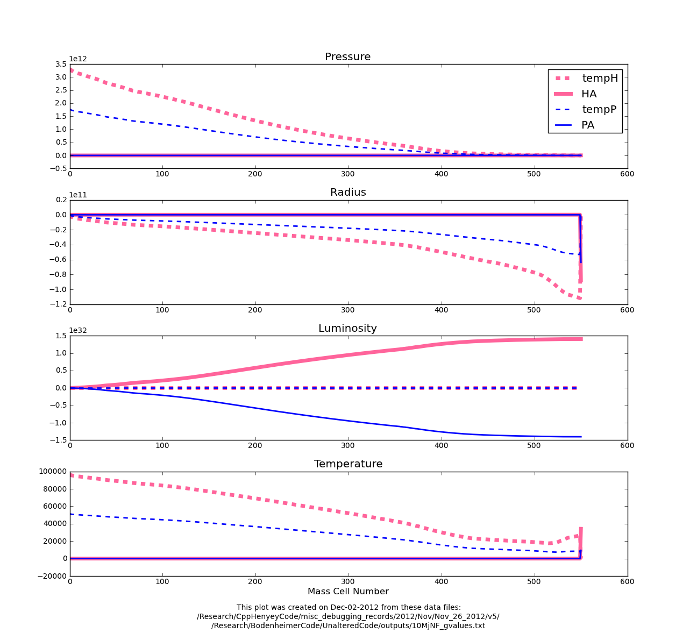

Date & Time: Dec. 2, 2012
Location: Campus
Computing context: /Desktop/Research/CppHenyeyCode, /Desktop/Research/BodenheimerCode/UnalteredCode/
From last time:
A sign error is entering thru the A matrices, which themselves depend on the S and Sum matrices. I've been trying to figure out where, exactly, the sign error is getting into those , w/ limited success. Figure 4 shows my scheme for tracking how sign differences propagate thru the code.
***For all variables BESIDES the luminosity, the bolded values are so much larger than the italicized ones that differences b/w the codes HA values don't really register in the results:
HdX[j] = dot(HB[j],HdX[j+1]) + HA[j]***
Trying to figure out where those errors/sign differences in the HA matrices are coming from, and how to eradicate them.
--> Start by drawing out what's going on with the whole matrix-solution/backsolving algorithm.
Done. See the scanned in "Henyey Backsolving Manifesto" notes below. [Note to self: upload the pdf of the notes to the blog's Manifesto section when you upload your entries...]
The take-home point from this exercise is that the G values are crucially important to the success of the entire dX calculation.
Start tomorrow looking into the Helena results, tracking what's going on with its G-values with special attention to what's going on at the innermost mass cell.
Today's work:
See what's going on with the G-matrix values in Helena:
What happens if I calculated the corrections using Peter's G values, but Helena's CDE values? Does that produce the correct dX profiles?
What if I replace Helena's G[0] values w/ Peter's G[0] values? What effect does that have?
Here's what's going on with the dX calculations (Figure 1):

Plots of the two
components that go into determining the dX values. dX = temp + A
Figure
1:
In Figure 1, above, the plotted quantities are defined as follows:


For the luminosity values, the temp values are (close enough to) zero, and the A values matter. For all the other variables, though, the A values don't really matter, and it's the temp values that determine the result.
Question: are the A values for all the variables of opposite signs, as they are for the luminosity? Or is that only a luminosity thing? (And if so, WHY???)
--> Answer (see Figure 2): it's only a luminosity thing.
Comparison of just the
A values
Figure
2: